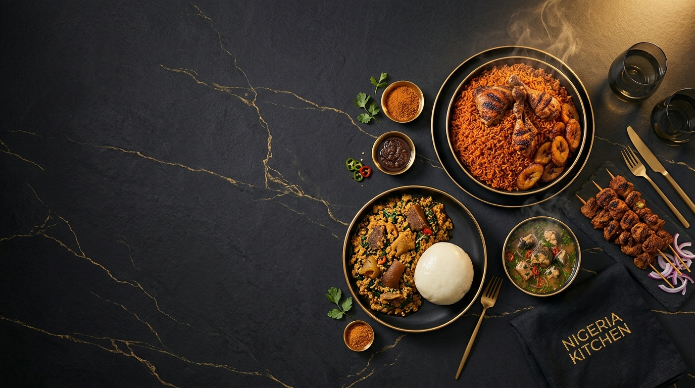

Nigerian cuisine is known for its variety of flavours, ingredients and cooking traditions. From rice dishes and soups to grilled foods and snacks, Nigerian meals reflect the country's diverse culinary culture.
Understanding Nigerian Cuisine
Nigerian cooking differs across regions and communities. Ingredients, preparation methods and preferred meals can vary, giving the country's food culture its rich variety.
Some popular examples include Jollof Rice, Egusi Soup, Bitterleaf Soup, Akara, Moi Moi and different types of pepper soup.
Essential Ingredients in Nigerian Cooking
Learning about common ingredients is a useful starting point for anyone interested in preparing Nigerian meals.
1. Tomatoes and Peppers
Tomatoes, red bell peppers and scotch bonnet peppers are frequently used in Nigerian cooking. They form the foundation of many sauces and provide colour, flavour and varying levels of heat.
2. Onions
Onions are widely used to build flavour in soups, stews, sauces and rice dishes.
3. Palm Oil and Vegetable Oil
Palm oil is commonly used in several traditional Nigerian soups, while vegetable oil is used in different fried foods, sauces and rice dishes.
4. Seasonings and Spices
Nigerian meals often combine seasoning cubes, salt, local spices and herbs to create distinctive flavours.
5. Rice, Beans and Other Staples
Rice, beans, yam, cassava and other staple foods are important parts of Nigerian meals. They are prepared in different ways depending on the dish.
Popular Nigerian Dishes to Know
Jollof Rice
A popular rice dish prepared with a seasoned tomato and pepper sauce. It is commonly served with chicken, beef or other accompaniments.
Bitterleaf Soup
A traditional soup prepared with bitterleaf and other ingredients. It is enjoyed with different Nigerian swallows.
Catfish Pepper Soup
A flavourful fish-based broth prepared with pepper and aromatic spices.
Shawarma
A popular street-food option consisting of seasoned fillings wrapped in flatbread. Nigerian-style versions often include vegetables and sauces.
Basic Nigerian Cooking Techniques
1. Blending
Blending is commonly used to prepare tomato, pepper and onion mixtures for sauces, stews and rice dishes.
2. Boiling and Simmering
These techniques are used to cook rice, prepare soups and soften ingredients such as meat and fish.
3. Frying
Frying is used in preparing foods such as plantain, akara and different types of snacks.
4. Seasoning
Adding seasonings gradually and tasting as you cook can help you control the flavour of your meals.
Tips for Beginners
- Start with simple recipes before attempting more complex dishes.
- Prepare and measure your ingredients before cooking.
- Learn how different spices and seasonings affect flavour.
- Control the quantity of pepper according to your preference.
- Pay attention to cooking time and heat levels.
- Practise regularly and learn from each cooking experience.
Explore Nigerian Food with Nigerian Kitchen
Learning about Nigerian cuisine is a journey through different ingredients, flavours and cooking traditions. Whether you are new to Nigerian food or already familiar with it, there is always something new to discover.
Discover Your Next Favourite Meal
Explore the Nigerian Kitchen menu and discover some of the meals available.
Explore Our Menu